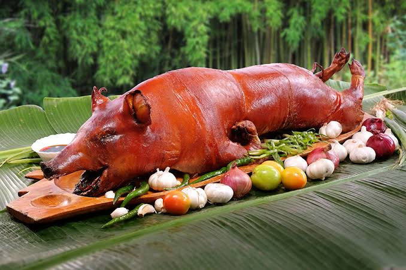

Lechon Baboy

Description
Lechon baboy is a Filipino-style whole roasted pig with crisp, golden skin and tender, flavorful meat. It is traditionally served during celebrations and family gatherings.
Ingredients
- 1 whole cleaned suckling pig
- Garlic, minced
- Onions, sliced
- Lemongrass
- Salt and pepper
- Cooking oil
Steps
- Clean and pat the pig dry, then rub the inside and outside with salt, pepper, and garlic.
- Stuff the cavity with onions and lemongrass, then sew or secure it closed.
- Place the pig on a roasting spit and slowly roast over charcoal, turning it regularly.
- Baste the skin with oil while roasting until it is evenly browned and crisp.
- Check that the meat is fully cooked, then rest, carve, and serve.
Back